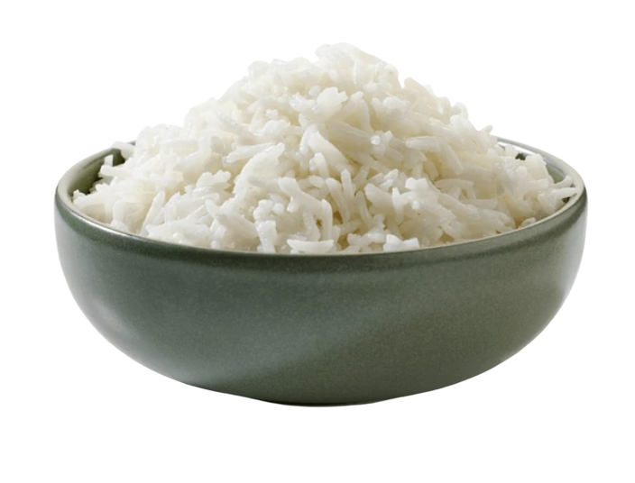
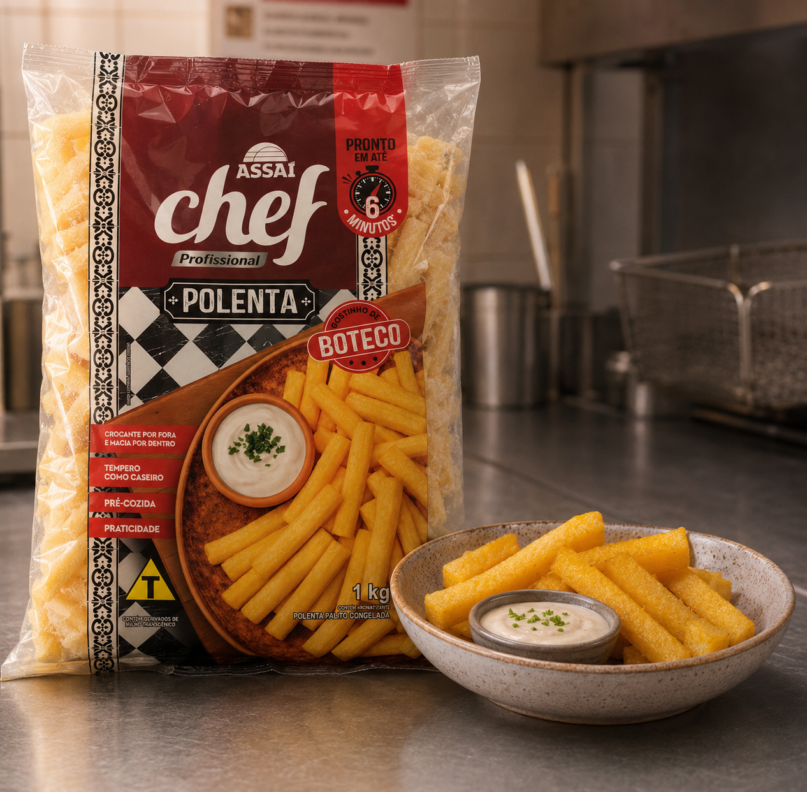
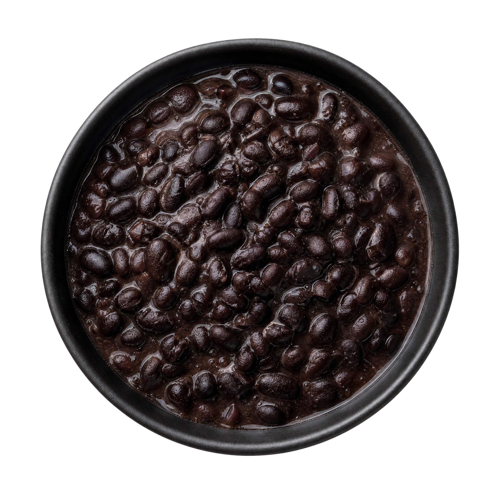
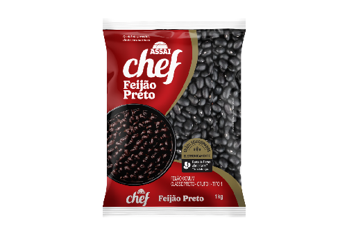
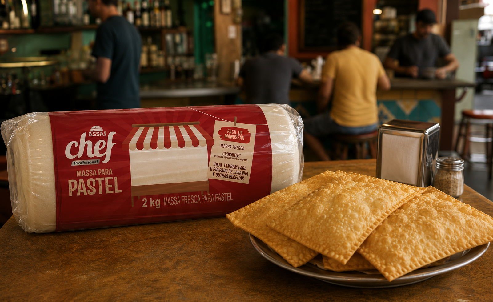
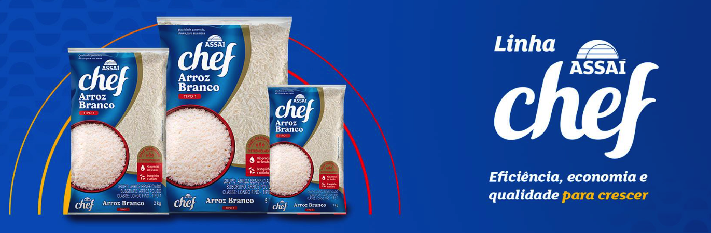

Escolha dos insumos:
como economizar sem mudar o padrão do seu prato
Comparar preço por quilo é só o começo. Rendimento, qualidade no preparo, armazenamento e custo por porção mostram se a troca realmente protege a margem do negócio.
Imagine dois pacotes de arroz de 5kg na mesma prateleira: marcas diferentes, um custa menos do que o outro.
Depois do preparo, porém, os grãos ficam mais quebrados, a panela produz menos porções no padrão da casa e o tempo de cocção aumenta. A economia indicada na etiqueta ainda existe?

Escolher um insumo com segurança exige uma conta simples e um teste dentro da rotina do negócio.
O preço por quilo é o primeiro dado da comparação. Ele permite colocar lado a lado embalagens de pesos diferentes e descobrir qual produto custa menos na mesma quantidade.
Um pacote de 5 kg vendido por R$ 30, por exemplo, custa R$ 6 por quilo. Já um pacote de 2 kg vendido por R$ 13 custa R$ 6,50 por quilo.
Os valores são ilustrativos, mas mostram a primeira diferença. O pacote maiores geralmente tem menor preço por quilo.
Mas a decisão ainda não terminou.
O insumo precisa passar pela cozinha, porque o resultado do preparo determina quantas porções poderão ser vendidas.

Comece a comparação com quatro informações
1. Preço da embalagem
2. Peso ou volume
3. Quantidade que sobra depois do preparo
4. Número de porções produzidas
Registre os dados dos produtos na mesma receita e use porções do mesmo tamanho para ter uma comparação real entre produtos que parecem similares.
Para descobrir o custo do insumo em cada venda, divida o valor usado na receita pelo número de porções que a receita produziu.
Custo do insumo por porção = valor usado na receita ÷ número de porções


Imagine que 1 kg de feijão custe R$ 6 e produza 20 porções no padrão adotado pelo negócio. O feijão representa R$ 0,30 no custo de cada porção.
Se outro produto custar R$ 5,70, mas produzir apenas 18 porções do mesmo tamanho, o custo sobe para aproximadamente R$ 0,32 por porção.
Rendimento também depende do seu modo de preparo
O teste deve reproduzir a rotina real. Use a mesma panela, a mesma receita e os mesmos utensílios de porcionamento empregados nos dias de venda.
A linha Assaí Chef informa que uma embalagem de 1 kg de arroz branco pode render 20 porções de 50 gramas. Nas apresentações de 2 kg e 5 kg, a referência corresponde a 40 e 100 porções.
Essa indicação ajuda no planejamento da compra, mas cada cozinha precisa confirmar o rendimento dentro da própria operação.
Quantidade de água, tempo no fogo, equipamento, descanso e tamanho da porção interferem no resultado dos cálculos, claro.

O cliente reconhece a regularidade
Quem volta para comprar espera encontrar o sabor, a textura e a quantidade que já conhece. Uma troca de insumo precisa preservar essa referência.
Pães, congelados e outros itens pedem critérios próprios. O melhor teste é aquele que mede o que realmente faz diferença no produto vendido.
Uma mudança pequena também facilita a comparação. Troque um insumo por vez e mantenha os demais ingredientes, as quantidades e o modo de preparo.
Se vários componentes forem alterados juntos, fica difícil descobrir qual deles provocou uma diferença no prato.
Onde as marcas próprias entram nessa conta
As marcas próprias ganharam espaço entre clientes que procuram reduzir o valor da compra sem abandonar critérios de qualidade.
Segundo dados da NielsenIQ, uma importante multinacional de pesquisa, as marcas próprias representam cerca de 3% do varejo alimentar brasileiro. Em outros países, a participação chega a 20%.
Esse movimento levou o Assaí a desenvolver um portfólio para diferentes usos. A marca Assaí Chef foi criada para transformadores e negócios de alimentação.
Os produtos Assaí Chef estão disponíveis exclusivamente nas lojas da capital e do interior de São Paulo.
A linha começou com cerca de 25 produtos, incluindo arroz, feijão, pães, leite e iogurtes.
A previsão divulgada pela companhia é alcançar aproximadamente 200 produtos até o fim de 2026.
